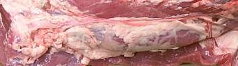
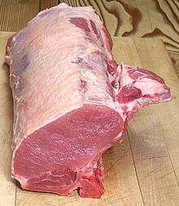

This cut is from the top of the pig down to the centerline (you can see the spine cut in half lengthwise in the photo) running from just forward of the ham to the midpoint of the pig.
While you won't often find such a cut at your local chain supermarket, ethnic markets do supply it. The photo speciment was obtained from a market that serves communities primarily from southern Russia, Georgia, Armenia, Mexico and Central America. They were offering the forward half, aft half, or the entire loin as you might chose at US $0.99/#.
The photo specimen was 18 inches long, 9 inches wide, 4-1/2 inches thick and weighed almost 12-1/2 pounds. Of this 7-3/4 pounds was clear meat free of fat, bones and membranes (62%) The rest 2-3/4 pounds of bones and 2 pounds of misc bits of meat, fat and membranes, made a most excelent soup stock.
This cut includes a lot of connective tissue so if you just slice it and
pan fry it you will find it flavorful but rather chewey. It's best used for
slow roasted or wet cooked methods and would make a flavorful soup.

